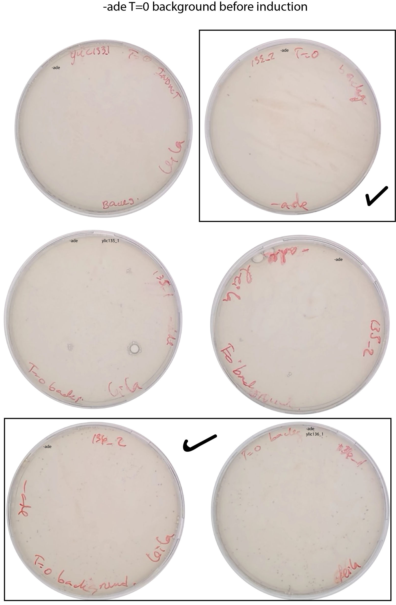
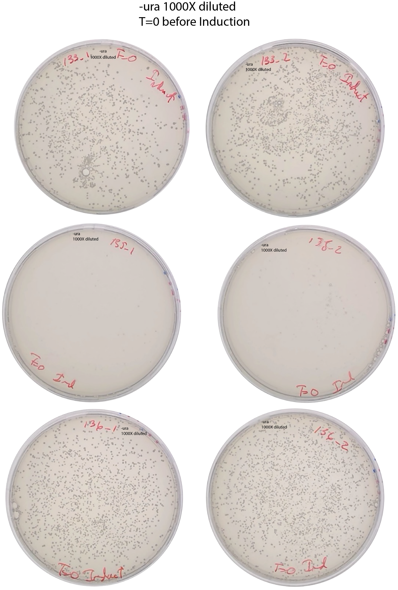
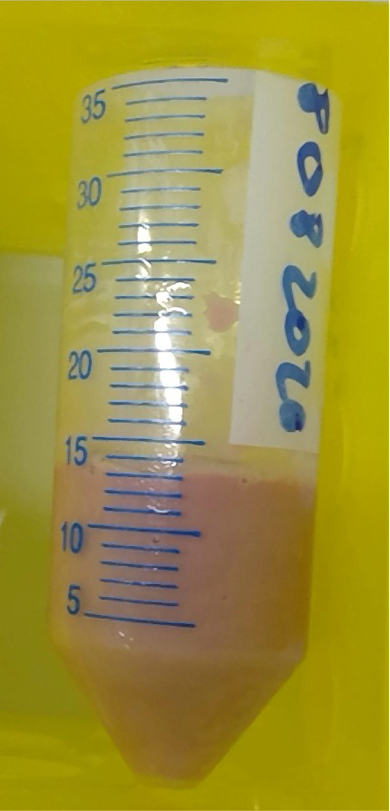
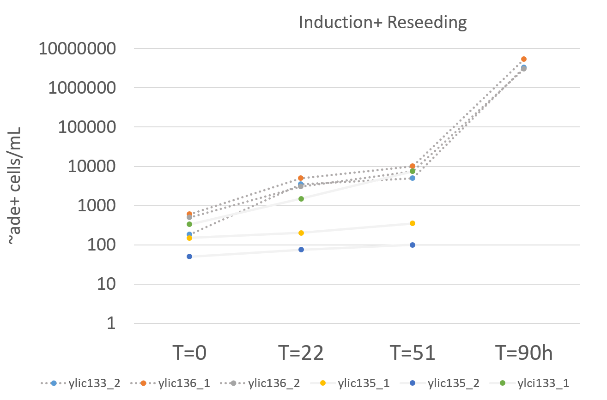
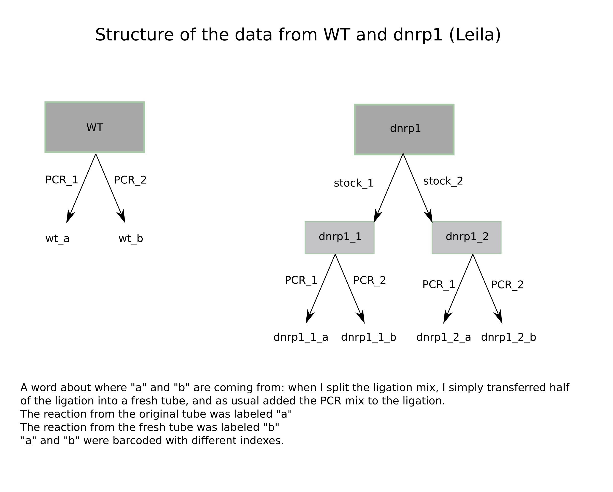

3. Title : 20200810-SATAY for \(\Delta\)bem2, \(\Delta\)nrp1 and WT¶
3.1. Date¶
10082020 - 18082020
3.2. Objective¶
To test the technique on the mutants and also to have data for the data analysis pipeline from Greg.
3.3. Method¶
10082020-Preculture in SD-URA+0.2%glucose +2% raffinose at 14:20
Scrape from the colonies from each background that passed the test (2 per each background)
Inoculate to a final volume of 20mL and to a final OD of 0.2
11082020
OD measurement
OD really low around 0.3 for all strains which could be due to the fact that the media did not contain extra adenine.
Add 6x ADE to the media which means: 44mg in 400mL .
SO I RESTARTED THE PRECULTURE ON 11082020
12082020 - Induction in SD-URA+2% gal (I also added 6XAde to this media) to a final OD of 0.2 - 50 hours (2 days)
OD measurement:
Strain |
OD 10x dilution |
ReaL OD |
Dilution Factor to OD=0.2 |
Time of preculture |
|---|---|---|---|---|
ylic133_1 |
0.659 |
6.6 |
~30 |
20h |
ylic133_2 |
0.577 |
5.7 |
~30 |
20h |
ylic135_1 |
0.073 |
0.7 |
~3 |
20h |
ylic135_2 |
0.126 |
1.26 |
~6 |
20h |
ylic136_1 |
0.678 |
6.7 |
~30 |
20h |
ylic136_2 |
0.626 |
6.3 |
~30 |
20h |
Issues :
The ylic135 strains grows a bit more slower than the rest which is expected due to the phenotype of not having bem2. But the amount of culture I need to add in order to have a final OD of 0.2 in 150mL is 50 mL and I only had 20mL. Therefore the initial OD of the induction will be around 0.1 for this strain.
Measure the background (T=0 of induction)
[x] Plate 200ul of the inoculum in SD-ADE+ 2% dextrose (expect 40-80 colonies per 200uL)
[x] Dilute 1000x and spread 200ul in SD-URA
[x] Prepare 3 flasks of 3L of SD-ADE media for the reseed of three strains
Per flask of 3L , add: 2,4L MiliQ to autoclave, dissolve 2.34g of -ade drop out + 20.7g of YNB (005) and filter sterilize it and add it after autoclaving the MiliQ. Add 300mL of 20% dextrose after autoclaving.
13082020
[x] Plating in SD-ADE to check induction after T=22h and SD-URA 1000x dilution.
[x] Check OD (should be around 4-5) at 10:45am
Strain |
OD 10x dilution |
ReaL OD |
Time |
|---|---|---|---|
ylic133_1 |
0.472 |
4.7 |
24h |
ylic133_2 |
1.17 |
11.7 |
24h |
ylic135_1 |
0.223 |
2.23 |
24h |
ylic135_2 |
0.217 |
2.17 |
24h |
ylic136_1 |
1.17 |
11.7 |
24h |
ylic136_2 |
1.13 |
11.3 |
24h |
Strains ylic133_2 and ylic136 have a very high OD
The cell culture of ylic133_1 have turned pink…
Still the background at T=0 can not be clearly determined.
14082020 - End of induction/Reseed at 14:00
Choose the 3 strains to continue for the reseed that has the least number of ADE+ cells at T=0 and the highest number of ADE+ after induction.
It seems that ylic133_2, ylic136_1 and ylic136_2 are the ones that have the least background at T=0 before induction.
Background check at 9:30am
Strain |
ade+ clones/mL |
ura+ clones/mL |
Time |
|---|---|---|---|
ylic133_1 |
< 5 |
~100* 5* E3 = 5*E5 |
0h Induction |
ylic133_2 |
~30*5 = 150 |
5 *E5 |
0h Induction |
ylic135_1 |
- |
- |
0h Induction |
ylic135_2 |
- |
- |
0h Induction |
ylic136_1 |
~ 80*5=400 |
5 *E5 |
0h Induction |
ylic136_2 |
~ 80*5=400 |
5 *E5 |
0h Induction |
Summary of the background


[x] Plate 200ul from the induction culture in -ade and 1000X in -ura to know the number of ade+ cells before reseeding. At T=51h of induction, at 13:00.
[x] OD measurement of the samples at T=51h of induction and T\(_r\)=0
Summary from the Induction
Strain |
OD start T=0 |
OD T=24h |
OD stop T=51h |
Time-Induction |
ADE+/ml-start |
ADE+/ml-24H |
ADE+/ml-stop |
|---|---|---|---|---|---|---|---|
ylic133_1 |
0.2 |
4.7 |
5.4 |
51h |
330 |
500 |
7500 |
ylic133_2 |
0.2 |
11.7 |
13.9 |
51h |
180 |
3500 |
5000 |
ylic135_1 |
0.1 |
2.23 |
6.5 |
51h |
150 |
200 |
350 |
ylic135_2 |
0.1 |
2.17 |
6.3 |
51h |
50 |
75 |
100 |
ylic136_1 |
0.2 |
11.7 |
13.8 |
51h |
600 |
5000 |
10000 |
ylic136_2 |
0.2 |
11.3 |
12.9 |
51h |
500 |
3000 |
7500 |


[x] Reseed at 13:30
17082020
[x] Check ADE+ cells during induction. Counting colonies from each plate.
Image J protocol:
select image of interest: circle tool and edit-> clear outside
Image -> Type -> 16bits
Make sure to capture the maximum number of right colonies: Image -> Adjust -> Threshold . Make sure the colonies are all red.
Process -> Make binary-> Watershed
Analyse -> Analyse Particles
18082020
[x] OD measurement for T=92h after reseeding at 12:00
[x] Plate 200ul with 1000X dilution in SD-Ade , and 200ul with 40000X dilution in SD-ura to estimate the growth of ade+cells compared with the T=0 of reseeding. Expect that the ade+ cells have grown by a factor of ~1000x.
Reseeding
Library to reseed
OD
approx Number of cells in 1mL
0.1
3,000,000
0.18
6,000,000
0.25
7,500,000
0.27
7,500,000
1
30,000,000
Strain |
OD at T=0 (reseed) |
Volume |
Library |
|---|---|---|---|
ylic133_2 |
0.25 |
3L |
7,500,000 * 3 * \(10^3\)= \(22.5 *10^9\) |
ylic136_1 |
0.27 |
3L |
7,500,000 * 3 * \(10^3\)= \(22.5 *10^9\) |
ylic136_2 |
0.18 |
3L |
6,000,000* 3 * \(10^3\)= \(18 *10^9\) |
End of reseeding
[x] Harvest of the cell culture.
15ml of solid pellet, frozen in -80C. The pellet is pink (?)
{width=50%}
Strain |
OD START |
OD STOP |
ADE+/mL-start |
ADE+/mL-start |
ADE+/ml-stop |
URA+/ml-stop |
% of ade+/ura+ |
Total # of cells |
Time- Reseeding |
|---|---|---|---|---|---|---|---|---|---|
ylic133_2 |
0.25 |
8.3 |
150 |
5000 |
3295000 |
19200000 |
16.9 |
\(7.47 *10^{11}\) |
90h |
ylic136_1 |
0.27 |
10.2 |
400 |
10000 |
5350000 |
18000000 |
27.8 |
\(9.18*10^{11}\) |
90h |
ylic136_2 |
0.18 |
9.5 |
400 |
7500 |
3070000 |
11600000 |
30.2 |
\(8.55*10^{11}\) |
90h |

3.3.1. Defining the complexity of the library¶
The number of ADE+ cells reseeded minus the number of background ADE+ cells is the complexity of the library.
To determine the complexity of the library, you should know:
#ADE+ per ml at the start of the reseed,
Volume of reseed.
If you harvest all the culture:
For strain 1:
OD8 ~8E+7 cells/ml -> 7.47E+11/ 8E+7~10L
The number of URA+ cells per ml at the end of the regrowth is 19200000 -> 7.47E+11/ 19.2E+5 ~ 38L
I reseed in a volume of 3L :
If so, the complexity of the library is 5E+3 * 3*10E+3= 1.5E+7
Complexity = \(ADE+|_{T=0(reseed)}\) * Volume of reseed
3.3.2. Number of cycles during the reseed¶
The number of cycles that each ADE+ cells has done during the regrowth of the libraries as follow:
N=ln(#ADE+ per ml STOP reseed/#ADE+ per ml START reseed)/ln(2)
N_ WT=9.34
N_dnrp1_1=9.06
N_dnrp1_2=8.67
3.4. Results¶
For the strain ylic135 it did not work, because it is very miserable to culture with others. It grows much more slower , so maybe growing it more and with less volume , for next time. Also ylic135 gives a relatively high background compared with the growth in -URA.
The way of computing the number of colonies in highly dense plates is pretty inaccurate with the best tool to do it which is ImageJ. So I think that is why I get like an order of magnitude lower than the number of colonies expected by Benoit.
The pellet from the reseed culture was pink , which could mean that there were many cells ade- that did not have any transposon event. Hence I suspect the sequencing/transposon coverage will be not optimal.
The number of ADE+ cells after reseeding is around 1000X times higher than at then of the induction which is what was expected :)
3.5. Next steps¶
DNA sequencing protocol
Repeat the SATAY for ylic135 from the beginning
3.5.1. Data arrangement for sequencing¶

3.6. Conclusion¶
First round of SATAY :) with WT and dnrp1 strains.
Next time I will:
Also plate the cells in CSM in order to capture the whole population.
Also plate the cells during the induction in -URA mainly to know the number of cells before the reseeding and to quantify better the ADe+/ADE- ratio across induction.